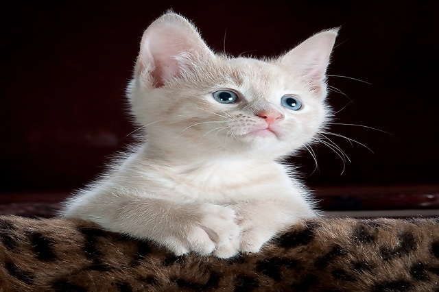

Mèo
Mèo, chính xác hơn là mèo nhà để phân biệt với các loài trong họ Mèo khác, là động vật có vú nhỏ và ăn thịt, sống chung với loài người, được nuôi để săn vật gây hại hoặc làm thú nuôi. Người ta tin rằng tổ tiên trung gian gần nhất trước khi được thuần hóa của chúng là mèo rừng châu Phi (Felis silvestris lybica). Mèo nhà đã sống gần gũi với loài người ít nhất 9.500 năm,[4] và hiện nay chúng là con vật cưng phổ biến nhất trên thế giới.
Có rất nhiều các giống mèo khác nhau, một số không có lông hoặc không có đuôi, và chúng tồn tại với rất nhiều màu lông. Mèo là những con vật có kỹ năng của thú săn mồi và được biết đến với khả năng săn bắt hàng nghìn loại sinh vật để làm thức ăn. Chúng đồng thời là những sinh vật thông minh, và có thể được dạy hay tự học cách sử dụng các công cụ đơn giản như mở tay nắm cửa hay giật nước trong nhà vệ sinh.
Mèo giao tiếp bằng cách kêu meo, gừ-gừ, rít, gầm gừ và ngôn ngữ cơ thể. Mèo trong các bầy đàn sử dụng cả âm thanh lẫn ngôn ngữ cơ thể để giao tiếp với nhau.
Giống như một số động vật đã thuần hóa khác (như ngựa), mèo vẫn có thể sống tốt trong môi trường hoang dã như mèo hoang. Trái với quan niệm thông thường của mọi người rằng mèo là loài động vật cô độc, chúng thường tạo nên các đàn nhỏ trong môi trường hoang dã.
Sự kết hợp giữa con người và loài mèo dẫn tới việc nó thường được khắc họa trong các truyền thuyết và thần thoại tại nhiều nền văn hoá, gồm truyền thuyết và thần thoại Ai Cập cổ, Trung Quốc cổ, Na Uy cổ, và vị Vua xứ Wales thời Trung Cổ, Hywel Dda (người Tử tế) đã thông qua bộ luật bảo vệ động vật đầu tiên trên thế giới bằng cách đặt ra ngoài vòng pháp luật hành động giết hại hay làm tổn hại tới mèo, với những hình phạt nặng nề cho những kẻ vi phạm. Tuy nhiên, mèo thỉnh thoảng bị coi là ma quỷ, ví dụ như nó không mang lại may mắn hay thường đi liền với những mụ phù thuỷ trong nhiều nền văn hoá Trung cổ.